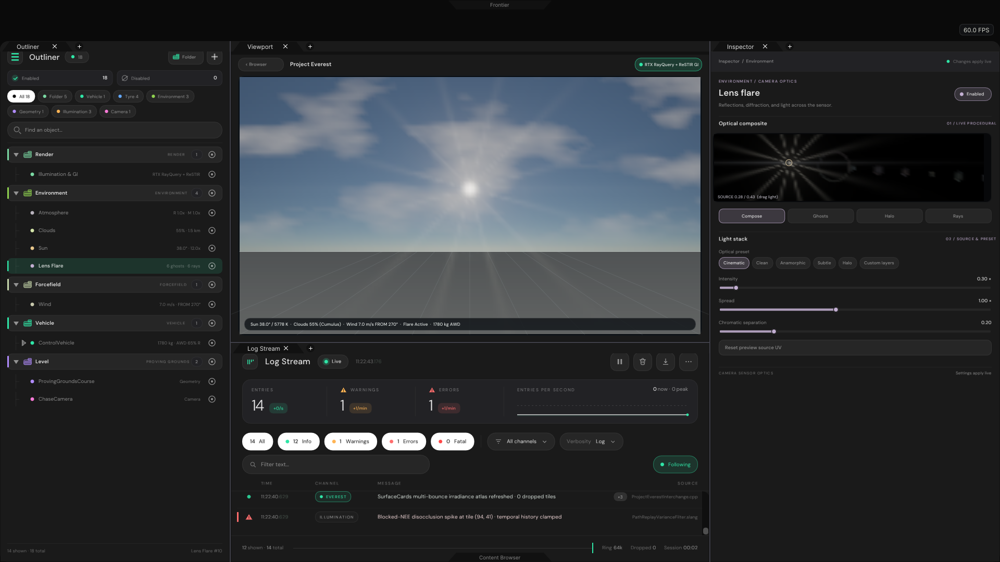
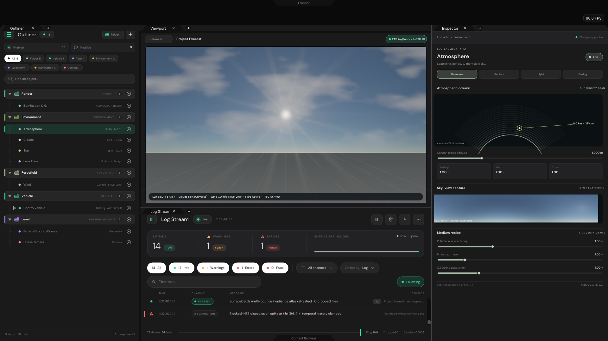
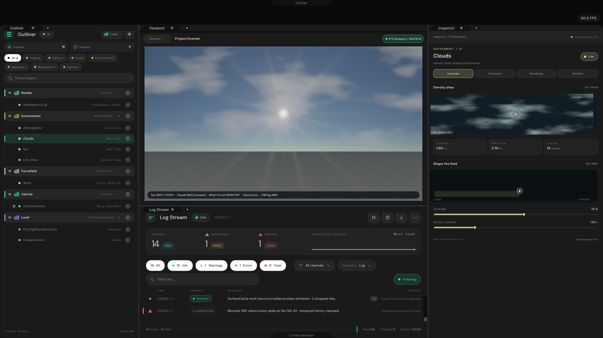
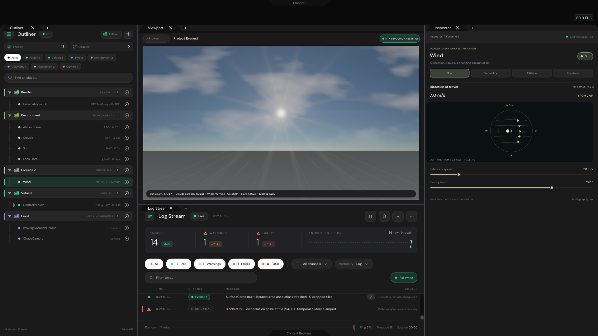
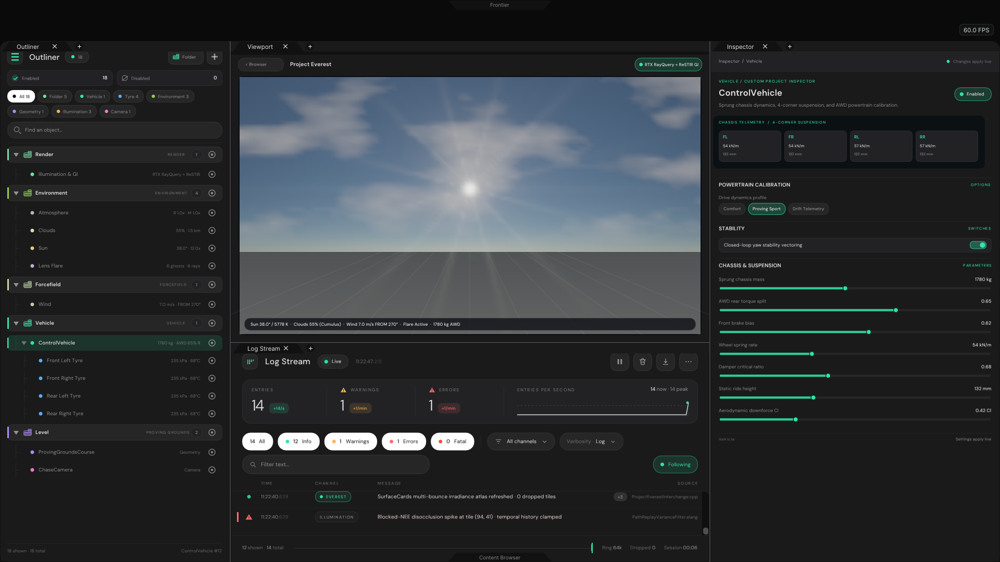
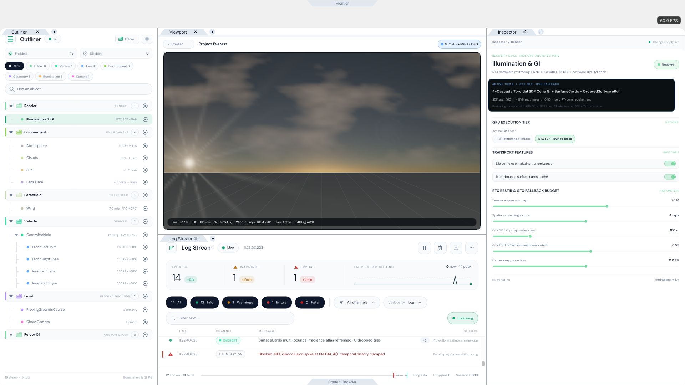

Project Everest — Phase 2 Native C++ UI Verification Gallery
Actual CPU-rasterised ImGui + ThorVG + TypefaceRegistry output from
Exhibits/ProjectEverest/Code/ProjectEverestValidation.cpp (1920×1080 Full HD):
WorkspaceApplication (Initialize → Loop → Finalize) unified Browser ↔
Workspace loop, global Engine Folders, Sun, Lens Flare,
Atmosphere, Clouds, and Wind Observatories, Project Everest
custom ControlVehicle & dual-tier RTX / GTX SDF+BVH Inspectors, and Control
Centre Dark/Light theme parity.
01 · Project Browser opens with Project Everest enumerated from Frontier/Projects
01-ProjectBrowser-Library.png
 02 · Selecting Project Everest opens the native application Reader & Open in Frontier hand-off
02-ProjectBrowser-SelectEverest.png
02 · Selecting Project Everest opens the native application Reader & Open in Frontier hand-off
02-ProjectBrowser-SelectEverest.png
 03 · Global Engine Folder Outliner + Folder Observatory (tabbed colour-coded FolderRecord cards, + Folder, cascade visibility)
03-Folder-Outliner-Observatory.png
03 · Global Engine Folder Outliner + Folder Observatory (tabbed colour-coded FolderRecord cards, + Folder, cascade visibility)
03-Folder-Outliner-Observatory.png
 04 · Global Engine Sun Observatory (ENVIRONMENT / 02 · polar sky-arc dial, ephemeris, Planck blackbody & lighting presets)
04-Sun-Observatory-Overview.png
04 · Global Engine Sun Observatory (ENVIRONMENT / 02 · polar sky-arc dial, ephemeris, Planck blackbody & lighting presets)
04-Sun-Observatory-Overview.png
 05 · Global Engine Lens Flare Observatory (ENVIRONMENT / CAMERA OPTICS · live HDR optical composite, ghosts, halo & rays)
05-LensFlare-Observatory-Optics.png
05 · Global Engine Lens Flare Observatory (ENVIRONMENT / CAMERA OPTICS · live HDR optical composite, ghosts, halo & rays)
05-LensFlare-Observatory-Optics.png

06 · Global Engine Atmosphere Observatory (ENVIRONMENT / 03 · wired to AtmosphereModel SingleScattering & column density scan)
06-Atmosphere-Observatory-Medium.png

07 · Global Engine Clouds Observatory (ENVIRONMENT / 01 · wired to CloudField procedural FBM density atlas & XY mix pad)
07-Clouds-Observatory-Weather.png

08 · Global Engine Wind Forcefield Observatory (FORCEFIELD / SHARED WEATHER · FROM bearing streamline compass & gust envelope)
08-Wind-Observatory-Forcefield.png

09 · Project Everest Custom ControlVehicle Inspector (4-corner FL/FR/RL/RR suspension telemetry, AWD split & 4 nested tyres)
09-Custom-Vehicle-Inspector.png

10 · Dual-Tier GPU Renderer switched to GTX SDF + BVH Fallback + Golden Hour sunset + Control Centre Light Theme (Inspector luma 226.0)
10-DualTier-GTX-Fallback-LightTheme.png
